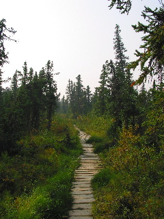
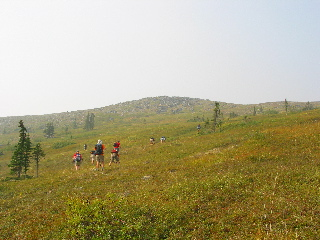
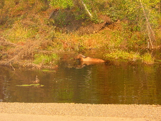
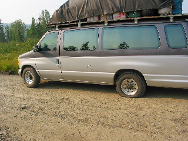

Day 3 — 2004/08/16
Drive off to Manley, taking a stop for a short five-ish mile hike near the White Mountains. (grrr, this trail had a name, I didn't write it down though. evilly.)

Then towards the end of the trail, we vered off a bit and got to do a little hiking on tundra. Tundra is really spongy, it feels much like walking on your bed. When you see you foot hit, the ground can give a couple inches or more before it stops. It does not completely give out though, the closer that your foot comes to where it will stop, the slower it goes. (Go walk on your bed, it will be so much clearer than anything I try to explain here.) When we got to the top of the nearby hill, we stopped for lunch before heading back.

Two events on the final drive to Manley after hiking. We have a moose spotting next to the road. (taking pictures through van glass makes for odd colorings.) and then a flat! Durring which we happily played fresby while trying not to bean the guides while they changed the tire.
Then we got to Manley and setup camp in the city park.